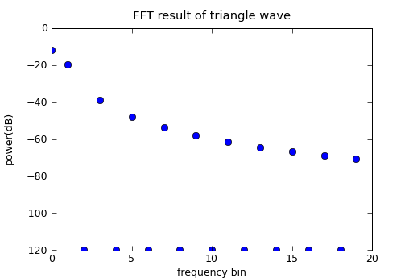
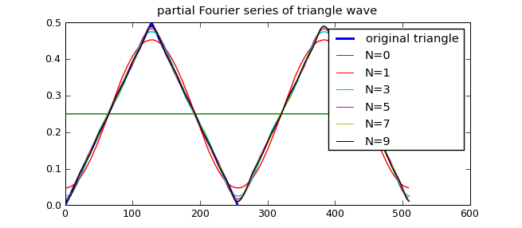
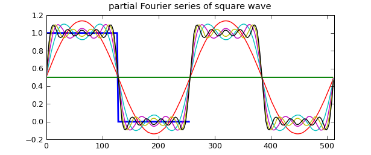

FFT演示程序
本章详细介绍如何综合利用之前所学习的numpy，traits，traitsUI和Chaco等多个库，编写一个FFT演示程序。此程序可以帮助你理解FFT是如何将时域信号转换为频域信号的，在开始正式的程序编写之前，让我们来复习一下有关FFT变换的知识，如果你没有学习过FFT，现在就是一个不错的学习机会。
FFT知识复习
FFT变换是针对一组数值进行运算的，这组数的长度N必须是2的整数次幂，例如64, 128, 256等等； 数值可以是实数也可以是复数，通常我们的时域信号都是实数，因此下面都以实数为例。我们可以把这一组实数想像成对某个连续信号按照一定取样周期进行取样而得来，如果对这组N个实数值进行FFT变换，将得到一个有N个复数的数组，我们称此复数数组为频域信号，此复数数组符合如下规律：
- 下标为0和N/2的两个复数的虚数部分为0，
- 下标为i和N-i的两个复数共轭，也就是其虚数部分数值相同、符号相反。
下面的例子演示了这一个规律，先以rand随机产生有8个元素的实数数组x，然后用fft对其运算之后，观察其结果为8个复数，并且满足上面两个条件：
>>> x = np.random.rand(8)
>>> x
array([ 0.15562099, 0.56862756, 0.54371949, 0.06354358, 0.60678158,
0.78360968, 0.90116887, 0.1588846 ])
>>> xf = np.fft.fft(x)
>>> xf
array([ 3.78195634+0.j , -0.53575962+0.57688097j,
-0.68248579-1.12980906j, -0.36656155-0.13801778j,
0.63262552+0.j , -0.36656155+0.13801778j,
-0.68248579+1.12980906j, -0.53575962-0.57688097j])
FFT变换的结果可以通过IFFT变换（逆FFT变换）还原为原来的值：
>>> np.fft.ifft(xf)
array([ 0.15562099 +0.00000000e+00j, 0.56862756 +1.91940002e-16j,
0.54371949 +1.24900090e-16j, 0.06354358 -2.33573365e-16j,
0.60678158 +0.00000000e+00j, 0.78360968 +2.75206729e-16j,
0.90116887 -1.24900090e-16j, 0.15888460 -2.33573365e-16j])
注意ifft的运算结果实际上是和x相同的，由于浮点数的运算误差，出现了一些非常小的虚数部分。
FFT变换和IFFT变换并没有增加或者减少信号的数量，如果你仔细数一下的话，x中有8个实数数值，而xf中其实也只有8个有效的值。
计算FFT结果中的有用的数值
由于虚数部共轭和虚数部为0等规律，真正有用的信息保存在下标从0到N/2的N/2+1个虚数中， 又由于下标为0和N/2的值虚数部分为0，因此只有N个有效的实数值。
下面让我们来看看FFT变换之后的那些复数都代表什么意思。
- 首先下标为0的实数表示了时域信号中的直流成分的多少
- 下标为i的复数a+b*j表示时域信号中周期为N/i个取样值的正弦波和余弦波的成分的多少， 其中a表示cos波形的成分，b表示sin波形的成分
让我们通过几个例子来说明一下，下面是对一个直流信号进行FFT变换：
>>> x = np.ones(8)
>>> x
array([ 1., 1., 1., 1., 1., 1., 1., 1.])
>>> np.fft.fft(x)/len(x)
array([ 1.+0.j, 0.+0.j, 0.+0.j, 0.+0.j, 0.+0.j, 0.+0.j, 0.+0.j,
0.+0.j])
所谓直流信号，就是其值不随时间变化，因此我们创建一个值全为1的数组x，我们看到它的FFT结果除了下标为0的数值不为0以外，其余的都为0。(为了计算各个成分的能量多少，需要将FFT的结果除以FFT的长度)，这表示我们的时域信号是直流的，并且其成分为1。
下面我们产生一个周期为8个取样的正弦波，然后观察其FFT的结果：
>>> x = np.arange(0, 2*np.pi, 2*np.pi/8)
>>> y = np.sin(x)
>>> np.fft.fft(y)/len(y)
array([ 1.42979161e-18 +0.00000000e+00j,
-4.44089210e-16 -5.00000000e-01j,
1.53075794e-17 -1.38777878e-17j,
3.87737802e-17 -1.11022302e-16j,
2.91853672e-17 +0.00000000e+00j,
0.00000000e+00 -9.71445147e-17j,
1.53075794e-17 +1.38777878e-17j, 3.44085112e-16 +5.00000000e-01j])
如何用linspace创建取样点x
要计算周期为8个取样的正弦波，就需要把0-2pi的区间等分为8分，如果用np.linspace(0, 2np.pi, 8)的话，产生的值为：
>>> np.linspace(0, 2*np.pi, 8)
array([ 0\. , 0.8975979 , 1.7951958 , 2.6927937 , 3.5903916 ,
4.48798951, 5.38558741, 6.28318531])
>>> 2*np.pi / 0.8975979
7.0000000079986666
可以看出上面用linspace只等分为7份，如果要正确使用np.linspace的话， 可以如下调用，产生9个点，并且设置endpoint=False，最终结果不包括最后的那个点：
>>> np.linspace(0, 2*np.pi, 9, endpoint=False)
array([ 0\. , 0.6981317 , 1.3962634 , 2.0943951 , 2.7925268 ,
3.4906585 , 4.1887902 , 4.88692191, 5.58505361])
让我们再来看看对正弦波的FFT的计算结果吧。可以看到下标为1的复数的虚数部分为-0.5，而我们产生的正弦波的放大系数(振幅)为1，它们之间的关系是-0.5*（-2）=1。再来看一下余弦波形:
>>> np.fft.fft(np.cos(x))/len(x)
array([ -4.30631550e-17 +0.00000000e+00j,
5.00000000e-01 -2.52659764e-16j,
1.53075794e-17 +0.00000000e+00j,
1.11022302e-16 +1.97148613e-16j,
1.24479962e-17 +0.00000000e+00j,
-1.11022302e-16 +1.91429446e-16j,
1.53075794e-17 +0.00000000e+00j, 5.00000000e-01 -1.35918295e-16j])
只有下标为1的复数的实数部分有有效数值0.5，和余弦波的放大系数1之间的关系是0.5*2=1。再来看2个例子：
>>> np.fft.fft(2*np.sin(2*x))/len(x)
array([ 6.12303177e-17 +0.00000000e+00j,
6.12303177e-17 +6.12303177e-17j,
-1.83690953e-16 -1.00000000e+00j,
6.12303177e-17 -6.12303177e-17j,
6.12303177e-17 +0.00000000e+00j,
6.12303177e-17 +6.12303177e-17j,
-1.83690953e-16 +1.00000000e+00j, 6.12303177e-17 -6.12303177e-17j])
>>> np.fft.fft(0.8*np.cos(2*x))/len(x)
array([ -2.44921271e-17 +0.00000000e+00j,
-3.46370983e-17 +2.46519033e-32j,
4.00000000e-01 -9.79685083e-17j,
3.46370983e-17 -3.08148791e-32j,
2.44921271e-17 +0.00000000e+00j,
3.46370983e-17 -2.46519033e-32j,
4.00000000e-01 +9.79685083e-17j, -3.46370983e-17 +3.08148791e-32j])
上面产生的是周期为4个取样(N/2)的正弦和余弦信号，其FFT的有效成分在下标为2的复数中，其中正弦波的放大系数为2,因此频域虚数部分的值为-1；余弦波的放大系数为0.8，因此其对应的值为0.4。
同频率的正弦波和余弦波通过不同的系数叠加，可以产生同频率的各种相位的余弦波，因此我们可以这样来理解频域中的复数:
- 复数的模（绝对值）代表了此频率的余弦波的振幅
- 复数的辐角代表了此频率的余弦波的相位
让我们来看最后一个例子：
>>> x = np.arange(0, 2*np.pi, 2*np.pi/128)
>>> y = 0.3*np.cos(x) + 0.5*np.cos(2*x+np.pi/4) + 0.8*np.cos(3*x-np.pi/3)
>>> yf = np.fft.fft(y)/len(y)
>>> yf[:4]
array([ 1.00830802e-17 +0.00000000e+00j,
1.50000000e-01 +6.27820821e-18j,
1.76776695e-01 +1.76776695e-01j, 2.00000000e-01 -3.46410162e-01j])
>>> np.angle(yf[1])
4.1854721366992471e-017
>>> np.abs(yf[1]), np.rad2deg(np.angle(yf[1]))
(0.15000000000000008, 2.3980988870246962e-015)
>>> np.abs(yf[2]), np.rad2deg(np.angle(yf[2]))
(0.25000000000000011, 44.999999999999993)
>>> np.abs(yf[3]), np.rad2deg(np.angle(yf[3]))
(0.39999999999999991, -60.000000000000085)
在这个例子中我们产生了三个不同频率的余弦波，并且给他们不同的振幅和相位：
- 周期为128/1.0点的余弦波的相位为0， 振幅为0.3
- 周期为64/2.0点的余弦波的相位为45度， 振幅为0.5
- 周期为128/3.0点的余弦波的相位为-60度，振幅为0.8
对照yf[1], yf[2], yf[3]的复数振幅和辐角，我想你应该对FFT结果中的每个数值所表示的意思有很清楚的理解了吧。
合成时域信号
前面说过通过ifft函数可以将频域信号转换回时域信号，这种转换是精确的。下面我们要写一个小程序，完成类似的事情，不过可以由用户选择只转换一部分频率回到时域信号，这样转换的结果和原始的时域信号会有误差，我们通过观察可以发现使用的频率信息越多，则此误差越小，直观地看到如何通过多个余弦波逐步逼近任意的曲线信号的:
# -*- coding: utf-8 -*-
# 本程序演示如何用多个正弦波合成三角波
import numpy as np
import pylab as pl
# 取FFT计算的结果freqs中的前n项进行合成，返回合成结果，计算loops个周期的波形
def fft_combine(freqs, n, loops=1):
length = len(freqs) * loops
data = np.zeros(length)
index = loops * np.arange(0, length, 1.0) / length * (2 * np.pi)
for k, p in enumerate(freqs[:n]):
if k != 0: p *= 2 # 除去直流成分之外，其余的系数都*2
data += np.real(p) * np.cos(k*index) # 余弦成分的系数为实数部
data -= np.imag(p) * np.sin(k*index) # 正弦成分的系数为负的虚数部
return index, data
# 产生size点取样的三角波，其周期为1
def triangle_wave(size):
x = np.arange(0, 1, 1.0/size)
y = np.where(x<0.5, x, 0)
y = np.where(x>=0.5, 1-x, y)
return x, y
fft_size = 256
# 计算三角波和其FFT
x, y = triangle_wave(fft_size)
fy = np.fft.fft(y) / fft_size
# 绘制三角波的FFT的前20项的振幅，由于不含下标为偶数的值均为0， 因此取
# log之后无穷小，无法绘图，用np.clip函数设置数组值的上下限，保证绘图正确
pl.figure()
pl.plot(np.clip(20*np.log10(np.abs(fy[:20])), -120, 120), "o")
pl.xlabel("frequency bin")
pl.ylabel("power(dB)")
pl.title("FFT result of triangle wave")
# 绘制原始的三角波和用正弦波逐级合成的结果，使用取样点为x轴坐标
pl.figure()
pl.plot(y, label="original triangle", linewidth=2)
for i in [0,1,3,5,7,9]:
index, data = fft_combine(fy, i+1, 2) # 计算两个周期的合成波形
pl.plot(data, label = "N=%s" % i)
pl.legend()
pl.title("partial Fourier series of triangle wave")
pl.show()

三角波的频谱

部分频谱重建的三角波
第18行的triangle_wave函数产生一个周期的三角波形，注意我们使用np.where函数计算区间函数的值。triangle函数返回两个数组，分别表示x轴和y轴的值。注意后面的计算和绘图不使用x轴坐标，而是直接用取样次数作为x轴坐标。
第7行的fft_combine的函数使用fft的结果freqs中的前n个数据重新合成时域信号，由于合成所使用的信号都是正弦波这样的周期信号，所以我们可以通过第三个参数loops指定计算几个周期。
通过这个例子，我们可以看出使用的频率越多，最终合成的波形越接近原始的三角波。
合成方波
由于方波的波形中存在跳变，因此用有限个正弦波合成的方波在跳变出现抖动现象，如下图所示，用正弦波合成的方波的收敛速度比三角波慢得多：
计算方波的波形可以采用如下的函数：
def square_wave(size):
x = np.arange(0, 1, 1.0/size)
y = np.where(x<0.5, 1.0, 0)
return x, y

正弦波合成方波在跳变处出现都抖动
三角波FFT演示程序
我们希望制作一个用户友好的界面，交互式地观察各种三角波的频谱以及其正弦合成的近似波形。 制作界面是一件很费工的事情，幸好我们有TraitsUI库的帮忙，不到200行程序就可以制作出如下的效果了:
程序中已经给出了详细的注释，相信大家能够读懂并掌握这类程序的写法，其中需要注意的几点:
16行，用ScrubberEditor创建一个自定义样式的拖动调整值的控件，77-80行设置Item的editor = scrubber，这样就用我们自定义的控件修改trait属性了，如果不指定editor的话，Range类型的trait属性将以一个滚动条做为编辑器。
用Range traits可以指定一个带范围的属性，它可以设置上限下限，上下限可以用整数或者浮点数直接指定，也可以用另外一个trait属性指定(用字符串指定trait属性名)，但是几种类型不能混用，因此程序中专门设计了两个常数的trait属性(36, 37行)，它们的作用只是用来指定其它trait属性的上下限。
low = Float(0.02) hi = Float(1.0)190行的triangle_func函数返回一个用frompyfunc创建的ufunc函数，150行用此函数计算三角波，但是用frompyfunc创建的ufunc函数返回的数组的元素的类型(dtype)为object，因此需要用cast["float64"]函数强制将其转换为类型为float64的数组。
- 处理trait属性的改变事件最简单的方式就是用固定的函数名: _trait属性名_changed，但是当多个trait属性需要共用某一个处理函数时，用@on_trait_change更加简洁。
下面是完整的程序:
# -*- coding: utf-8 -*-
from enthought.traits.api import \
Str, Float, HasTraits, Property, cached_property, Range, Instance, on_trait_change, Enum
from enthought.chaco.api import Plot, AbstractPlotData, ArrayPlotData, VPlotContainer
from enthought.traits.ui.api import \
Item, View, VGroup, HSplit, ScrubberEditor, VSplit
from enthought.enable.api import Component, ComponentEditor
from enthought.chaco.tools.api import PanTool, ZoomTool
import numpy as np
# 鼠标拖动修改值的控件的样式
scrubber = ScrubberEditor(
hover_color = 0xFFFFFF,
active_color = 0xA0CD9E,
border_color = 0x808080
)
# 取FFT计算的结果freqs中的前n项进行合成，返回合成结果，计算loops个周期的波形
def fft_combine(freqs, n, loops=1):
length = len(freqs) * loops
data = np.zeros(length)
index = loops * np.arange(0, length, 1.0) / length * (2 * np.pi)
for k, p in enumerate(freqs[:n]):
if k != 0: p *= 2 # 除去直流成分之外，其余的系数都*2
data += np.real(p) * np.cos(k*index) # 余弦成分的系数为实数部
data -= np.imag(p) * np.sin(k*index) # 正弦成分的系数为负的虚数部
return index, data
class TriangleWave(HasTraits):
# 指定三角波的最窄和最宽范围，由于Range似乎不能将常数和traits名混用
# 所以定义这两个不变的trait属性
low = Float(0.02)
hi = Float(1.0)
# 三角波形的宽度
wave_width = Range("low", "hi", 0.5)
# 三角波的顶点C的x轴坐标
length_c = Range("low", "wave_width", 0.5)
# 三角波的定点的y轴坐标
height_c = Float(1.0)
# FFT计算所使用的取样点数，这里用一个Enum类型的属性以供用户从列表中选择
fftsize = Enum( [(2**x) for x in range(6, 12)])
# FFT频谱图的x轴上限值
fft_graph_up_limit = Range(0, 400, 20)
# 用于显示FFT的结果
peak_list = Str
# 采用多少个频率合成三角波
N = Range(1, 40, 4)
# 保存绘图数据的对象
plot_data = Instance(AbstractPlotData)
# 绘制波形图的容器
plot_wave = Instance(Component)
# 绘制FFT频谱图的容器
plot_fft = Instance(Component)
# 包括两个绘图的容器
container = Instance(Component)
# 设置用户界面的视图， 注意一定要指定窗口的大小，这样绘图容器才能正常初始化
view = View(
HSplit(
VSplit(
VGroup(
Item("wave_width", editor = scrubber, label=u"波形宽度"),
Item("length_c", editor = scrubber, label=u"最高点x坐标"),
Item("height_c", editor = scrubber, label=u"最高点y坐标"),
Item("fft_graph_up_limit", editor = scrubber, label=u"频谱图范围"),
Item("fftsize", label=u"FFT点数"),
Item("N", label=u"合成波频率数")
),
Item("peak_list", style="custom", show_label=False, width=100, height=250)
),
VGroup(
Item("container", editor=ComponentEditor(size=(600,300)), show_label = False),
orientation = "vertical"
)
),
resizable = True,
width = 800,
height = 600,
title = u"三角波FFT演示"
)
# 创建绘图的辅助函数，创建波形图和频谱图有很多类似的地方，因此单独用一个函数以
# 减少重复代码
def _create_plot(self, data, name, type="line"):
p = Plot(self.plot_data)
p.plot(data, name=name, title=name, type=type)
p.tools.append(PanTool(p))
zoom = ZoomTool(component=p, tool_mode="box", always_on=False)
p.overlays.append(zoom)
p.title = name
return p
def __init__(self):
# 首先需要调用父类的初始化函数
super(TriangleWave, self).__init__()
# 创建绘图数据集，暂时没有数据因此都赋值为空，只是创建几个名字，以供Plot引用
self.plot_data = ArrayPlotData(x=[], y=[], f=[], p=[], x2=[], y2=[])
# 创建一个垂直排列的绘图容器，它将频谱图和波形图上下排列
self.container = VPlotContainer()
# 创建波形图，波形图绘制两条曲线： 原始波形(x,y)和合成波形(x2,y2)
self.plot_wave = self._create_plot(("x","y"), "Triangle Wave")
self.plot_wave.plot(("x2","y2"), color="red")
# 创建频谱图，使用数据集中的f和p
self.plot_fft = self._create_plot(("f","p"), "FFT", type="scatter")
# 将两个绘图容器添加到垂直容器中
self.container.add( self.plot_wave )
self.container.add( self.plot_fft )
# 设置
self.plot_wave.x_axis.title = "Samples"
self.plot_fft.x_axis.title = "Frequency pins"
self.plot_fft.y_axis.title = "(dB)"
# 改变fftsize为1024，因为Enum的默认缺省值为枚举列表中的第一个值
self.fftsize = 1024
# FFT频谱图的x轴上限值的改变事件处理函数，将最新的值赋值给频谱图的响应属性
def _fft_graph_up_limit_changed(self):
self.plot_fft.x_axis.mapper.range.high = self.fft_graph_up_limit
def _N_changed(self):
self.plot_sin_combine()
# 多个trait属性的改变事件处理函数相同时，可以用@on_trait_change指定
@on_trait_change("wave_width, length_c, height_c, fftsize")
def update_plot(self):
# 计算三角波
global y_data
x_data = np.arange(0, 1.0, 1.0/self.fftsize)
func = self.triangle_func()
# 将func函数的返回值强制转换成float64
y_data = np.cast["float64"](func(x_data))
# 计算频谱
fft_parameters = np.fft.fft(y_data) / len(y_data)
# 计算各个频率的振幅
fft_data = np.clip(20*np.log10(np.abs(fft_parameters))[:self.fftsize/2+1], -120, 120)
# 将计算的结果写进数据集
self.plot_data.set_data("x", np.arange(0, self.fftsize)) # x坐标为取样点
self.plot_data.set_data("y", y_data)
self.plot_data.set_data("f", np.arange(0, len(fft_data))) # x坐标为频率编号
self.plot_data.set_data("p", fft_data)
# 合成波的x坐标为取样点，显示2个周期
self.plot_data.set_data("x2", np.arange(0, 2*self.fftsize))
# 更新频谱图x轴上限
self._fft_graph_up_limit_changed()
# 将振幅大于-80dB的频率输出
peak_index = (fft_data > -80)
peak_value = fft_data[peak_index][:20]
result = []
for f, v in zip(np.flatnonzero(peak_index), peak_value):
result.append("%s : %s" %(f, v) )
self.peak_list = "\n".join(result)
# 保存现在的fft计算结果，并计算正弦合成波
self.fft_parameters = fft_parameters
self.plot_sin_combine()
# 计算正弦合成波，计算2个周期
def plot_sin_combine(self):
index, data = fft_combine(self.fft_parameters, self.N, 2)
self.plot_data.set_data("y2", data)
# 返回一个ufunc计算指定参数的三角波
def triangle_func(self):
c = self.wave_width
c0 = self.length_c
hc = self.height_c
def trifunc(x):
x = x - int(x) # 三角波的周期为1，因此只取x坐标的小数部分进行计算
if x >= c: r = 0.0
elif x < c0: r = x / c0 * hc
else: r = (c-x) / (c-c0) * hc
return r
# 用trifunc函数创建一个ufunc函数，可以直接对数组进行计算, 不过通过此函数
# 计算得到的是一个Object数组，需要进行类型转换
return np.frompyfunc(trifunc, 1, 1)
if __name__ == "__main__":
triangle = TriangleWave()
triangle.configure_traits()